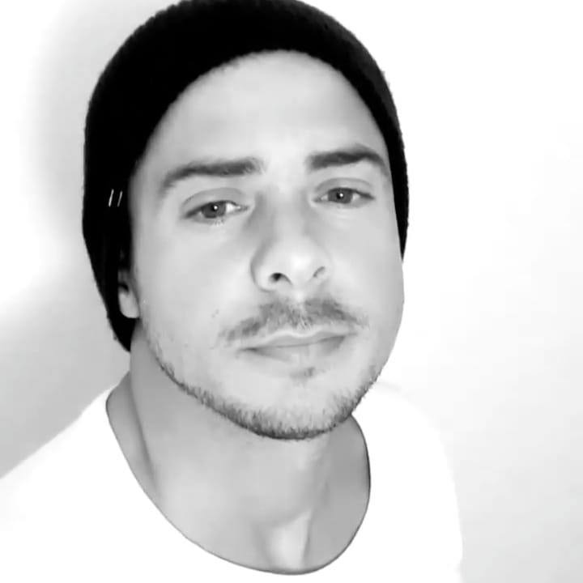

Luciano Garcia Carabetta
Desarrollador full stack
Descripción personal:
Mi nombre es Luciano tengo 37
años y actualmente vivo en la
ciudad de Punta Alta, provincia
de Buenos Aires.
Luego de trece años como oficial
de la Armada Argentina dedicí
tomar otros rumbos y, tras
un paso por el mundo de las
energías renovables en el puesto
de Material Manager, comencé a
estudiar programación.
Educación:
Técnico en Equipos e Instalaciones Electromecánicas y Bachiller, modalidad Producción de Bienes y Servicios.
Licenciado en Administración de Recursos Navales para la Defensa.

Skills:
Liderazgo
Responsabilidad
Trabajo en equipo
Versatilidad
Hobbies:
Gimnasio
Tenis
Yoga
Experiencias Laborales:
2023 - Comencé a estudiar en "Soy Henry" la cerrera de Full Stack Developer
2019 - 2022 Me desempeñé como Material Manager en los parque eólicos "Vientos Neuquinos" y "Chubut
Norte" de Argentina y "Los Olmos" y "Puelche Sur" de Chile.
2011-2019 Me desempeñé como Oficial de Marina de la Armada Argentina.
Razón para estudiar Desarrollador y expectativas:
Desde chico sentí interés por la computación pero no fue hasta hace dos años que comencé a tener una fuerte inquietud por aprender a programar. A través de un amigo conocí a "Soy Henry" y su dinámica de aprendizaje tomando así la decisión de comenzar a estudiar esta carrera.
Mi principal expectativa es la de poder vivir de la programación pudiendo manejar mis tiempos y teniendo la
posibilidad de trabajar desde cualquier lugar del planeta, ya que me gustaría poder vivir en la mayor
cantidad de paises posibles.